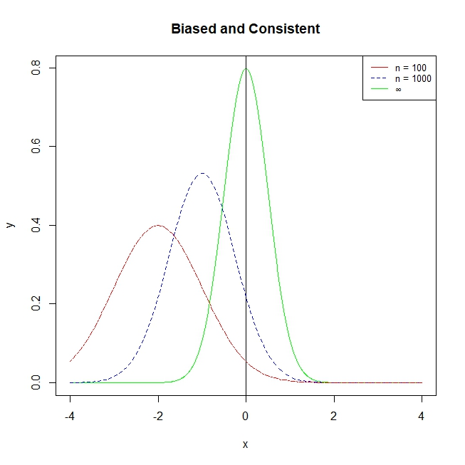

In the last part (Part I: Introduction to Statistical Models), we discussed a variety of models from the Generalised Linear Model family. We briefly discussed the estimators used, but we did not go into detail. In this part (Part II Econometric Theory), we focus in on estimators. This lesson dives into the basics of estimators, and the desirable properties of estimators.
This lesson covers the following topics:
- A brief introduction to econometrics, and the goals of econometrics.
- A discussion on the finite sample properties of estimators - unbiasedness and variance.
- A discussion on the asymptotic (infinitely large sample size) properties of estimators.
2.1.1: Introduction to Econometrics
What is econometrics, and how does it relate to statistics and the social sciences?
Econometrics is a field developed by economists, to use data to answer economic questions (although these methods are applicable to other social sciences). Specifically, econometrics was very concerned about causal questions:
- What is the effect of years of education on income?
- What is the effect of a company receiving a patent on sales growth?
- What is the effect of getting an internship on your wage after graduating?
Social sciences are also very concerned with causal questions. For example:
- Political Science: how do different voting systems effect voter turnout?
- Sociology: How do different traditional gender roles in countries effect the domestic violence rates?
- Public Policy: How does a specific policy effect outcomes?
- Psychology: Does discussing contentious issues with your partner cause marital disputes?
Causality is not unique to the social sciences - it is used extensively in the natural and physical sciences as well. However, one main difference is that the sciences tend to be able to run more randomised controlled experiments (like drug trials) with control and treatment groups.
- Randomisation is powerful, since it eliminates the effects of other confounders, and ensures both treatment and control groups are similar.
On the other hand, social sciences have a much more difficult time running these randomised experiments (we will explore this issue later). Instead, social scientists have been forced to adapt and find new ways of using observational data to show causality.
Statistics has traditionally been dedicated to the sciences, where causality was easier to show. As a result, economists had to develop their own methods, econometrics, in order to identify causal effects in observational data.
Today, econometrics is the dominant field for causal inference in the social sciences, as it provides a strong toolkit for the identification of causal effects in observational data.
Because of the focus on causal inference, and the lack of randomised controlled trials, econometricians have been forced to study estimators extensively.
We briefly discussed estimators in 1.2.2, as well as referenced them extensively throughout Part I as a way to find the estimates of our coefficients in our regression models.
- In classical statistics, understanding regression models is enough. This is because with a randomised controlled trial, regression estimates are (frequently) directly interpretable as causal effects.
- However, in observational data situations that we face in the social sciences, we do not have randomisation of treatment. Thus, our regression coefficients are not directly interpretable as causal effects.
As econometricians and social scientists, we must then analyse estimators, and their properties, to determine if our estimators, under a set of assumptions, are a good estimator of the causal effects.
This Part of the course (Part II: Econometric Theory) focuses on the econometric theory of estimators. We will look at the theoretical properties of common estimators, such as Ordinary Least Squares, Method of Moments, Instrumental Variables, and Maximum Likelihood.
- The following part (Part III: Applied Econometrics) will take our theory of estimators, and apply them to real research designs.
- These two parts thus go together and will provide you with a strong basis in causal identification, estimation, and inference.
2.1.2: Unbiasedness of Estimators
Ensure you understand the difference between estimators, estimates, and estimands, as discussed in 1.2.2.
An estimator is a mathematical rule, that takes our sample data, and produces an estimate \hat\theta_n of a true population value \theta.
The most important property of an estimator is that its estimates are relatively correct.
- If the true population \theta is actually, for example, \theta = 10, we would hope that our estimator produces estimates centered around that value.
- If our estimator is producing estimates that center around \hat\theta_n = 1000, that is clearly not a good estimator.
This idea leads us to the property of unbiasedness.
An estimator is unbiased, if its estimates \hat\theta_n are of the following:
E(\hat\theta_n) = \theta
Or in other words, if we repeatedly sample and use the estimator, on average, the estimates will be equal to the true population value.
We want an estimator that is unbiased. Why?
- We know that the expectation of a random variable is its “best guess” of its value.
- We know that estimates \hat\theta_n from an estimator are a random variable called the sampling distribution (see 1.2.3)
- Thus, if E(\hat\theta_n) = \theta, that means our “best guess” of the estimator value is the true parameter value \theta. That means any one estimate \hat\theta_n is on average, correct.
We can also quantify the idea of bias.
Bias(\hat\theta_n) = E(\hat\theta_n) - \theta
- If an estimator is unbiased, E(\hat\theta_n) = \theta, so the bias will be 0.
- If an estimator is not unbiased, then bias will be non-zero.
2.1.3: Variance and Efficiency of Estimators
Unbiasedness is not the only desirable property of estimators.
For example, let us say the true population parameter \theta = 0. We will have two estimators: estimator A and estimator B.
- Estimator A, after two samples (for simplicity), produces estimates -1 and 1.
- Estimator B, after two samples (for simplicity), produces estimates -100 and 100.
Both estimators A and B are unbiased:
E(\hat\theta_A) = E(\hat\theta_B) = \theta = 0
However, clearly, estimator A is, on average, much more closer to the true \theta = 0 than estimator B.
- This is because while estimator B is unbiased, its estimates are very spread out, meaning that each estimate is far from the expected value (and true population value of \theta).
Thus, we want an estimator that is not only unbiased, but also has low variance.
The variance of an estimator is defined as:
E((\hat\theta_n - E(\hat\theta_n))^2) = Var (\hat\theta_n)
- This formula is just the formula for variance introduced in 1.1.5, but substituting \hat\theta_n in.
As I said above, when judging two unbiased estimators for \theta, we should chose the one with the lower variance, as it is less likely to have an estimate very far from the truth.
The more mathematical reason for this is because the unbiased estimator with the lower variance has more precision (and more efficiency).
The precision of an estimator is, on average, how far its estimates are from the true population parameter.
Precision is measured with mean squared error:
\begin{split} MSE(\hat\theta_n) & = E((\hat\theta_n - \theta)^2) \\ & = Var(\hat\theta_n) + Bias(\hat\theta_n)^2 \end{split}
- The first line is just the average distance between estimate \hat\theta_n and population parameter \theta, squared (to remove direction).
- The second equation shows why when bias is equal, the estimator with the lower variance is preferred.
One thing you may have noticed is that, in theory, it is possible for a biased estimator to have a lower MSE than a unbiased estimator.
- This is particularly the case when the biased estimator has a slight bias but small variance, while the unbiased estimator has a giant variance.
This brings us the case of efficiency.
An estimator A is more efficient than an estimator B if:
MSE(\hat\theta_A) < MSE(\hat\theta_B)
When judging estimators, we want to chose the estimator that is more efficient.
2.1.4: Introduction to Asymptotic Large Sample Properties
In the past two sections, we have focused on finite-sample properties of estimators: unbiasedness and variance.
Finite sample properties are properties of estimators when sample size n is equal to any real number.
The properties apply to any n (from a tiny sample size to a large sample size).
However, sometimes, we are not just interested in finite sample properties.
We may also be interested in how the estimator behaves as we increase the sample size to be larger and lager.
- This is useful for multiple reasons, as we will cover in this course.
- The central limit theorem is actually a large-sample property, which we will discuss later.
These properties are called large-sample properties or asymptotic properties.
Asymptotic properties are properties of estimators as the sample size becomes larger and larger.
Or more mathematically, as the sample size n approaches infinity.
Asymptotics can help us with many things:
- They can make statistical inference possible.
- They can help us relax assumptions of unbiasedness, assuming we have a large-enough sample size.
- They can also tell us if a estimator is good or not.
2.1.5: Asymptotic Consistency of Estimators
A desirable large sample property of any estimator is consistency.
An estimator is consistent, if as we increase sample size towards infinity, the estimate will become more and more concentrated around the true population value \theta.
Or in other words, as sample size increases indefinitely, we will get closer and closer to the true population value \theta, until at infinite sample size, all our estimates will be exactly \theta.
Mathematically:
Pr(|\hat\theta_n - \theta|> \epsilon) \rightarrow 0, \text { as } n \rightarrow ∞
- Or in other words, the proabability that the distance between an estimate \hat\theta_n and the true population value \theta will be higher than a small close-to-zero value \epsilon will be 0, since our estimates \hat\theta_n will converge at the \theta.
An estimator can be both biased, but consistent.
- i.e. in smaller sample sizes, the estimator might not be on average correct, but over a large enough sample size, it will become “unbiased”.
For example, in the figure below, we can see that this estimator is biased at small values of n, but as n increases, it becomes more consistent, collapsing its distribution around the true \theta.

One useful property in establishing asymptotic consistency is the law of large numbers.
The law of large numbers states that the sample average of a random sample, is a consistent estimator of the population mean.
For example, let us say we have a random variable x. We take a random sample of n units, so our sample is (x_1, \dots, x_n).
- Let us define \bar x_n as our sample average.
- Let us define \mu as the true population mean of variable x.
The law of large numbers states that:
\text{plim}( \bar x_n) = \mu
- Where \text{plim} states that as n approaches infinity, the probability distribution of \bar x_n collapses around \mu.
Why is this the case? This sample mean estimator is calculated simply through the formula for mean:
\bar x_n = \frac{1}{n}\sum\limits_{i=1}^n x_i
Let us define the variance of our sample of x_1, \dots, x_n as Var(x_i) = \sigma^2. We can now find the variance of our sampling distribution of estimator \bar x_n:
\begin{split} Var(\bar x_n) & = Var\left( \frac{1}{n}\sum\limits_{i=1}^n x_i \right) \\ & = \frac{1}{n^2} Var \left(\sum\limits_{i=1}^n x_i\right) \\ & = \frac{1}{n^2} \sum\limits_{i=1}^n Var(x_i) \\ & = \frac{1}{n^2} \sigma^2 \\ & = \frac{\sigma^2}{n} \end{split}
And as sample size n increases to infinity, we get:
\lim\limits_{n \rightarrow ∞} Var(\bar x_n) = \lim\limits_{n \rightarrow ∞} \frac{\sigma^2}{n} = 0
Thus, the variance of our estimator \bar x_n shrinks to zero, so as sample size increases to infinity n, the sampling distribution of estimator \bar x_n collapses around the true population mean.
The same law of large numbers gives us these other properties:
The first two properties are that the sample variance and sample covariance estimators are consistent:
\begin{split} & \text{plim}(S.Var(x_i)) = Var(x_i) \\ & \text{plim}(S.Cov(x_i, y_i)) = Cov (x_i, y_i) \end{split}
The other properties are about algebra with probability limits. Assume \text{plim} (u_n) = a, and \text{plim}(v_n) = b. Then, the following are true:
\begin{split} & \text{plim} (u_n + v_n) = a + b \\ & \text{plim} (u_n v_n) = ab \\ & \text{plim} (u_n v_n) = a/b \end{split}
2.1.6: Asymptotic Normality of Estimators
We already discussed the variance of sampling distributions of estimators. However, variance is not enough for us to run statistical inference tests - we need to know the distribution of the sampling distribution.
In 1.2.4, we said that the central limit theorem states that the sampling distribution mimics a normal distribution.
However, this statement is not entirely accurate - it is oversimplified. In actuality, the central limit theorem states:
The Central Limit Theorem states that, regardless of the population distribution, the sampling distribution of an estimator will be a normal distribution as sample size increases to infinity.
Mathematically, let us say we have a random variable x. We take a random sample of n units, so our sample is (x_1, \dots, x_n). The central limit theorem states
Pr(w_n < w) \rightarrow \Phi(w) \quad \text{as } n \rightarrow ∞
- Where \Phi(w) is the cumulative density function (cdf) of \mathcal N(0,1) (the standard normal distribution introduced in 1.1.7).
- Where w_n is a random variable defined as w_n = \frac{\bar x_n - \mu}{\sigma / \sqrt n}.
w_n, as you probably recall, takes a form almost identical to the test statistics we worked with in regression.
Importantly, central limit theory says that any sample estimator’s distribution is asymptotically normal, no matter the original distribution of the variables.
- This allows us to run statistical tests, like we did in regression, without worrying about the underlying distribution of our variables y and x.
However, you might have noticed that all of this is an asymptotic property - where sample size approaches infinity.
- Obviously, we do not have infinite sample sizes in our data.
So how does this asymptotic property affect us when we never have infinite sample sizes?
The answer is that if we have a sufficiently large sample size (generally 30 or more), the sampling distribution approximates the normal distribution (but is not exactly a normal distribution until n = ∞.
- Thus, we adjust for this approximation by using a t-distribution instead of a normal distribution (as we saw when doing simple and multiple linear regression).
But the more important note is that all of our statistical inference is only approximate - it is not completely accurate.
- The only way we can ensure our statistical inference is “completely accurate” is if our error term in regression u is normally distributed, which generally occurs when our underlying variables are normally distributed.
- In practice, we treat the approximation as “good enough”.